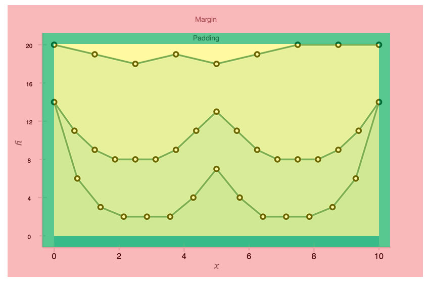

Aristochart works by rendering graph data onto the canvas element. Canvas is fast and requires very little resources to render. This brings up the question of browser compatibility. Currently all major browsers support the canvas element but IE 6, 7 and 8 are left out in the cold. There are no plans to support these browsers in the near future.
Aristochart's API is very simple. To get started, check out some of the examples and then report back here to get a more indepth look at Aristochart.
Aristochart itself is more of a data manager, it's the theme that takes control of rendering the data on screen. Aristochart comes with a default set of render functions, each of which can be overridden by a theme. Below is a list of features that can be implemented by the theme and the data that is sent to each feature's render function. See here for a less than pretty view of the features are on the default theme. See here for the code on how different features are called.
The style object that is sent as the first parameter to all the functions is the style properties declared in the options.style for each feature. For example, the point feature gets sent options.style.<lineName>.line or if there is not style specifically associated with that line, options.style.default.line. Remember that your theme is merged with the options object so styles not explicitedly overridden by the user will default to your theme. The style object should consist of variable properties related to style that can be easily substituted in your render functions such as colors, stroke widths or offsets and all default values should go in style.default.
| Feature | Description | Parameters | Default |
|---|---|---|---|
| Point | A point on the graph. |
style Style object, rx Raster coord x, ry Raster coord y, x Data x, y Data y, graph Line Name |
Aristochart.point.circle |
| Axis | The graph's axis lines. |
style Style object, x Start of the line x coord int, y Start of the line y coord int, x1 End of the line x coord int, y1 End of the line y coord int, type Axis type "x"|"y" |
Aristochart.axis.line |
| Line | The graph's lines. |
style Style object, points An array of Points |
Aristochart.line.line |
| Fill | The fill underneath a line. |
style Style object, points An array of Points |
Aristochart.line.fill |
| Tick | The graph's ticks along the axes. |
style Style object, rx Raster x coord int, ry Raster y coord int, type The axis type "x"|"y" |
Aristochart.tick.line |
| Label | The numbers along the axis. |
style Style object, text The string to print string, rx Raster x coord int, ry Raster y coord int, type The axis type "x"|"y" |
Aristochart.label.text |
| Title | The axis titles. |
style Style object, text The string to print string, rx Raster x coord int, ry Raster y coord int, type The axis type "x"|"y" |
Aristochart.title.text |
Aristochart strived to make inputting data as simple as possible. To add data to an Aristochart graph, you edit the data property of your options object. You need to include an x dataset and at least one y dataset. A dataset, is an array of numbers you want to display on the graph.
The x dataset is special as there can only be one. It dictates how the horizontal axis reacts to the inputted y data. It allows Aristochart to determine and generate the horizontal labels. The x dataset can be an integer, a range in the form of [upper, lower] or an array of numbers. If given an array of numbers, it will only select the first and last integers and determine the labels.
The y dataset is what you see being outputted onto the graph. Aristochart allows you to input as many y datasets as you want in the form of y, y1, y2, yn. Each one will form their own line on the graph and be rendered in order. Each line can be styled individually by creating a style object for that line under options.style.<line>. Each individual style is then merged with the default.
Aristochart has a vast amount of options, each of which can be overridden by a theme and then the user. Below is a the default options, each of which can be overridden. All the data in the style property is sent to that specific feature's render function so if you change the render function, these styles may not apply.
{
width: 640, //Width of the graph in pixels
height: 400, //Height of the graph in pixels
margin: 70, //Margin between the axis and border. See dimensions.
padding: 20, //Padding between the axis and data. See dimensions.
render: true, //Toggle Aristochart automatically calling .render
fill: { //The fill feature which fill under any given line.
index: 0, //The features index. Each feature has its own.
render: Aristochart.line.fill, //The default fill render function
fillToBaseLine: true, //Toggle filling to the baseline (or x axis).
},
axis: { //The axis feature which renders the axes
index: 1,
render: Aristochart.axis.line, //The default axis render function
x: {
steps: 5, //The amount of steps on the x axis
render: Aristochart.axis.line //X specific axis render function
},
y: {
steps: 10, //The amount of steps on the y axis
render: Aristochart.axis.line //Y specific axis render function
}
},
tick: {
index: 2,
render: Aristochart.tick.line //The default tick render function
},
line: {
index: 3,
render: Aristochart.line.line //The default line render function
},
point: {
index: 4,
render: Aristochart.point.circle //The default point render function
},
label: {
index: 5,
render: Aristochart.label.text,
x: {
step: 1 //The x axis label step/increment.
},
y: {
step: 1 //The y axis label step/increment.
}
},
title: {
index: 6,
render: Aristochart.title.text, //The default title render function
x: "x", //The x axis title
y: "y" //The y axis title
},
style: { //The style object
default: {
point: { //The styles sent to the point render function
stroke: "#000",
fill: "#fff",
radius: 4,
width: 3,
visible: true
},
line: { //The styles sent to the line render function
stroke: "#298281",
width: 3,
fill: "rgba(150, 215, 226, 0.4)",
visible: true
},
axis: { //The styles sent to the axis render function
stroke: "#ddd",
width: 3,
visible: true,
x: {
visible: true,
fixed: true //Determines whether the axis is fixed to the bottom
},
y: {
visible: true,
fixed: true //Determines whether the axis is fixed to the left
}
},
tick: {
align: "middle", //The tick alignment; "outside", "inside",
stroke: "#ddd",
width: 2,
minor: 10, //The length of the minor ticks in pixels
major: 15, //The length of the major ticks in pixels
visible: true,
x: {
fixed: true //Determines whether the ticks are fixed to the bottom
},
y: {
fixed: true //Determines whether the ticks are fixed to the left
}
},
label: { //The label styling
x: {
font: "Helvetica",
fontSize: 14,
fontStyle: "normal",
color: "#000",
align: "center",
baseline: "bottom",
offsetY: 8,
offsetX: 3,
visible: true,
fixed: true
},
y: {
font: "Helvetica",
fontSize: 10,
fontStyle: "normal",
color: "#000",
align: "center",
baseline: "bottom",
offsetY: 8,
offsetX: 8,
visible: true,
fixed: true
}
},
title: { //The title styling
color: "#777",
font: "georgia",
fontSize: "16",
fontStyle: "italic",
visible: true,
x: {
offsetX: 0,
offsetY: 120,
visible: true
},
y: {
offsetX: -135,
offsetY: 10,
visible: true
}
}
}
}
};
Aristochart aims for simplicity so it's API follows that philosophy. Usually, the Aristochart constructor will satisfy most your needs but below is all the exposed functions you can hook your application into to work even better with Aristochart.
This is Aristochart's constructor. If you pass a canvas, Aristochart will render onto this. If you pass a wrapper, Aristochart will generate the canvas and append it into the wrapper. If no elements are passed, Aristochart will generate a canvas and will make it accessible via <instance>.canvas for your own placement at a later time.
The options object is where Aristochart takes all it's settings from. There is only one property required in the options object and that's the data property. See Data for more information. Once passed, the object runs through a number of merges. First of all, the options object is merged with the theme passed if any, writing any settings not set by the user. Next, it's merged with the defaults and overwrites any settings not set by the user or theme. This is done to ensure the objects continuity throughout Aristochart. These merges are completed within the constructor during initialization. To edit any options after initializing Aristochart, you can access the options object at <instance>.options and edit at will but changes will not appear till <instance>.render is called.
Updates all of Aristochart's graphs variables such as the graph bounds and axis steps. This function should be called if the data property was updated on a graph.
Renders the chart onto the supplied or generated canvas.
This method returns an object with the graph's raster origin coordinates and each separate line's points. For example, if multiple y lines are passed in the data, getPoints would c
Refreshs the y.min, y.max, x.min, x.max variables. These represent the upper and lower bounds of the supplied data which is used in calculating the labels and spacing on the chart. <instance>.refreshBounds() is called in <instance>.render().
Base64 encodes the canvas element and returns a printable Image element.
The variable where theme's are stored. Aristochart's default theme is store in Aristochart.themes.default.
These variables are where Aristochart's feature's render functions are stored. These stores hold the functions that render specific items onto the canvas. Aristochart.point.circle for example renders the graph points you see in the default theme. See Theming for information on parameters passed to these functions and how to implement your own functions.
Below is an image depicting the margin and padding properties that can be passed in the options object.

Upcoming release: v0.3
Release: v0.2 (download)
Initial Release: v0.1 (download)